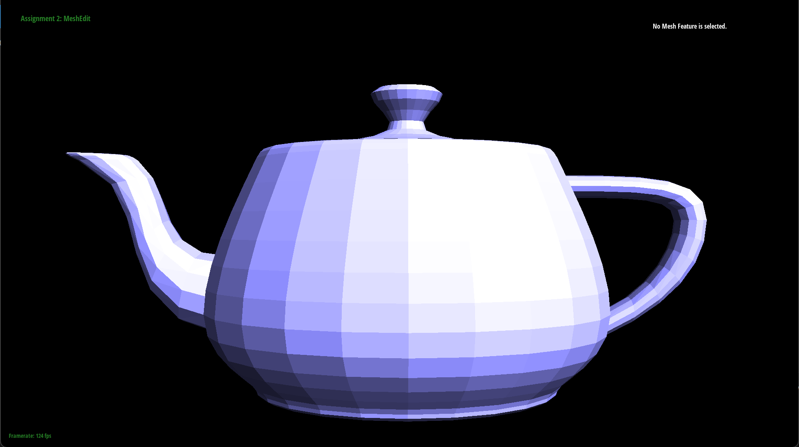

What is Phong shading?
The most basic way of shading an object represented by a polygon mesh is to color each polygon one single color. This color is chosen by the angle the normal vector of the polygon makes relative to the light direction (along with the desired color of the object). This is called flat shading, and is the simplest method of shading both conceptually and computationally to implement. However, it tends to produce images with unnatural lighting unless an extremely high count of polygons is used to allow for a gradual color gradient rather than a jarring jump from one color to another. In order to prevent this, we use a technique that we've used before; interpolating the colors.
To be more specific, we actually interpolate the normal vector to the specific point on the polygon between the three vertices. The normal vectors at the vertices are averaged over all faces that the vertex is part of, with weight assigned proportional to the area of each contributing face normal vector. Then, points on faces are written as weighted sums between vertices (in this case, since we're using triangles, we're essentially using barycentric coordinates to interpolate points inside the triangle).
Finally, the normal vector at the point is interpolated with the same weights assigned to the barycentric coordinates (like in Rasterizer: Task 4).
This gives a smooth color gradient of shades along the polygon according to the light source, and can also accurately capture highlights that would be missed by simply interpolating the colors themselves at each vertex (which is known as Gouraud shading), although Phong shading is more expensive computationally.
Traversing the faces with the halfedge mesh
Our task was to compute the weighted sum of the area vectors over all faces that the input vertex is part of. (This vector is later normalized to appropriately compute the color shade.) In order to do this, we needed to be able to somehow iterate over all of the relevant faces and compute their area normal vectors. This involved traversing the halfedge mesh data structure, which requires a more in-depth explanation.
What is a halfedge mesh?
One way to think about what halfedges are is "edges with direction." Each halfedge $h$ starts at one vertex $v$ and points to another $w$, and has a twin which starts at $w$ and points back to $v$. Since normal edges are without direction, they correspond to a pair of twin halfedges starting and ending at both of the edge's vertices. One thing to note is that there is a natural way to think about halfedges being on a specific "side" of an edge: by convention, we place halfedges to the left of the edge they are associated with (from the given halfedge's perspective). This means that consecutive halfedges (halfedges that point to each other in a loop) form counterclockwise loops around faces. This allows us to define the next halfedge coming out of a halfedge in a natural way: the next halfedge is the one that is part of the same face and starting at the vertex that this halfedge ends at. The concepts of twin and next are enough for halfedges to define a whole data structure to describe a polygon mesh and link it together in a natural way.
Altogether, a halfedge in a halfedge mesh keeps track of 5 pieces of information.
- The vertex that the halfedge originates from.
- The edge along which the halfedge points.
- The face that the halfedge is inside.
- The next halfedge along the face it is inside.
- The twin halfedge pointing in the opposite direction.
You may wonder why we introduce these halfedges that need to keep track of so much data, compared to just working with vertices, edges, and faces directly. The benefit is that we can actually define the vertices, edges, and faces just by halfedges (along with giving position information to each vertex), which means we only really have to work with one type of object as a true component of the mesh, which is a lot simpler. Then we can use the stored halfedge references to get back to a vertex, edge, or face that we want to work with whenever we want.
In the other direction, vertices, edges, and faces are associated with any one of the halfedges that correspond to them in the way described above. To be precise, a vertex stores a pointer to some arbitrary halfedge that originates from it (as well as position data). An edge stores a pointer to one of the two (paired twin) halfedges that go between its two vertices. A face stores a pointer to any of the halfedges that go along the interior of its boundary.
This is all the information we need to know about the halfedge mesh; it really doesn't get much more complicated than that.
How do we traverse the faces?
So, now with the relevant background, we return to our problem. Given a specific vertex $x$ that we want to find the area-weighted normal of, how do we iterate over all of the neighboring faces to find their area normal vectors and add them up? Here's the procedure:
- Take the starting halfedge $s$ that our vertex $x$ points to; store it as the current halfedge $c$.
- Set the previous halfedge $p$ to $c$.
- Get the twin of the current halfedge $t$ and find its next halfedge $t_n$.
- Set $c$ equal to $t_n$.
- Get the vectors $v_c, v_p$ corresponding to the halfedges $c,p$ (by finding their source and target vertices and subtracting those positions appropriately) and take their cross product $v_c \times v_p$. The resulting vector is twice the area normal vector of one of the faces.
- Add this to a running total of area normal vectors $v_T$ (which was initialized to the zero vector at the start).
- Repeat steps 2 through 6 until $c$ is equal to the halfedge pointed to by $x$, which means we've looped over every consecutive edge pair and thus every neighboring face.
- Return $\frac{v_T}{2}$.
What's going on here? Essentially, we iterate over halfedges with source vertex $x$ clockwise: this diagram shows how we get from one vertex to the next (and why it's clockwise when halfedges go counterclockwise around a face):
Insert diagram here
Then, we use the fact that the area of a triangle is equal to $\frac12 ab \sin C$, where $a,b$ are side lengths of the triangle and $C$ is the angle between those two sides. This can also be written as $\frac12 \cdot \overrightarrow{a} \times \overrightarrow{b}$, since the cross product incurs this $\sin C$ coefficient. Finally, if we want the normal vector to point outwards (so that it points to the outside of the mesh and not the inside), we should make sure vector $\overrightarrow{b}$ is counterclockwise from vector $\overrightarrow{a}$. That's why we do $v_c \times v_p$; since we iterate over the halfedges clockwise, the previous edge is counterclockwise from the current edge and we take our cross product in the correct order.
And that's the algorithm. Our actual implementation collected neighboring vertices in a list in clockwise order in one pass, and then used that list to find the necessary vectors to take cross products in a second iteration, but the principle is the same.
How does it look?
The end result is really a quite substantial visual improvement, so much so I think I don't need to say which is flat shading and which is Phong (although it comes at quite a cost computationally, so you could also determine the difference by looking at the framerate in the bottom left corner):
